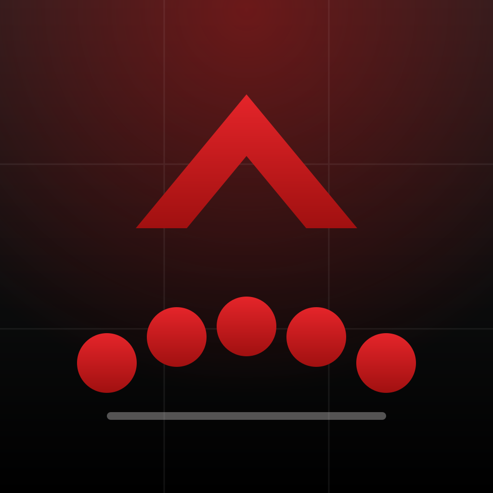
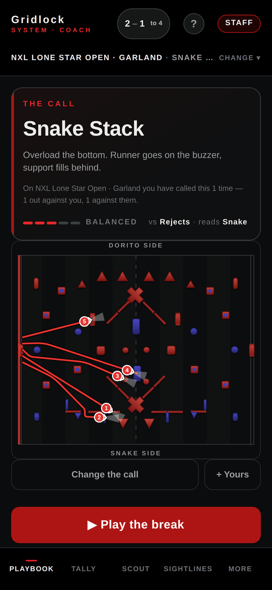
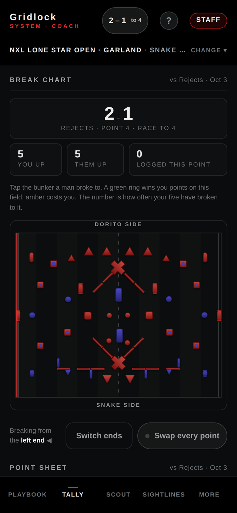
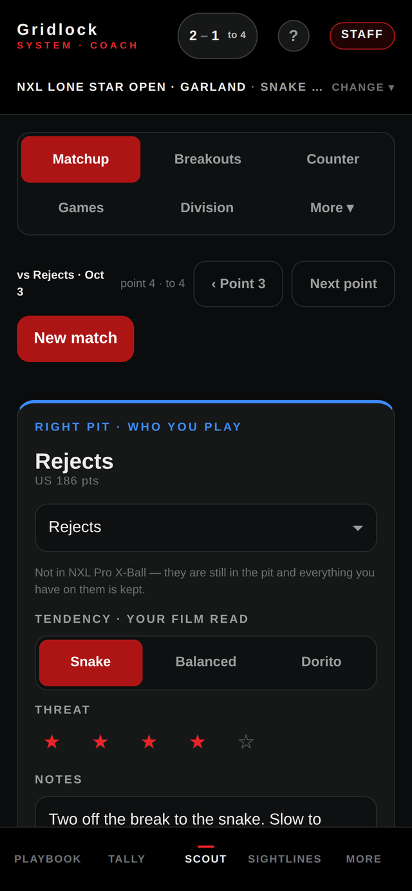
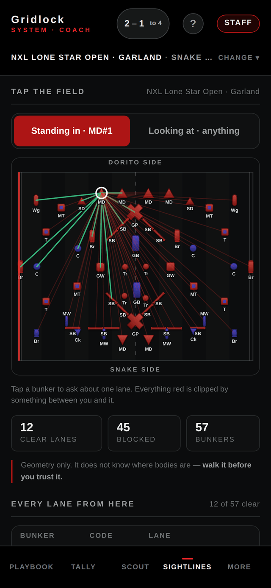

A call every player can read.
Pick the field and the break, or write your own. Route, face, shot lane and job for each of the five, in your team's own words. Switch ends and it turns round with you.

SYSTEM · COACH EDITIONBetween the buzzer and the next point
Your playbook, point sheet and read on the other pit. Built for X-Ball and 5-man, together on the sideline.
Works with no signal. Your season stays on your phone. Keep a copy of it.

A point from every angle
Pick the field and the break, or write your own. Route, face, shot lane and job for each of the five, in your team's own words. Switch ends and it turns round with you.
Chart the break bunker by bunker. Set your format once and the sheet calls match point, overtime or a tie. By Sunday it tells you which bunkers win you points on this field.

Their five by name, the calls you have seen them run and your answer to each, kept against the team. Watch a game you are not in and scout both benches.

Ask from any bunker. Drag the lane to the spot you actually shoot at and see what is in the way, in feet.

Scout reads and sightlines are coaching aids. They are not predictions or a substitute for the officials' live call.
Between points
We won it or they won it. The score rides in the header on every screen. Race to 4, 5, 7, or one point a game for 5-man: the sheet calls match point and tells you when it is over.
Set the break clock to your event's rule. It starts itself when a point is scored and counts down on every screen, so the five are set before the buzzer.
Nine men, five slots. Tap one off, tap one on. The five stands until you change it, and Playbook and the cards name them.
When the official's clock runs out you say what your format does: ahead, the match ends; level, a tie or next point wins. Penalties are recorded as what they cost, never called.
Between events
Won, lost, tied and open at this event, counted from finished sheets. Every sheet you have kept, with how it ended.
One card a man: his bunker, his job, which way he faces, where he lanes. Hand them over or share the five.
The recognition drill. The field draws a break with nothing naming it, and a two-second clock holds you to the call.
Your answer to each of their calls, written down against the team and shown beside the call on game day.
A notebook you own
There is no server and no signal needed. Rosters, field walks, lineups, grades and clinic sign-ins live on this device. Messages and league notices are local records; share a copy through your own apps when you need to reach the squad.
Use More → Nexus → Save a copy before a tournament or a device change. There is no cloud service to sync or recover your season for you.
How to save and restore →The next point starts here